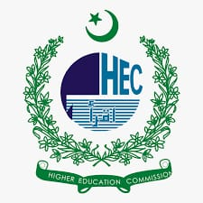
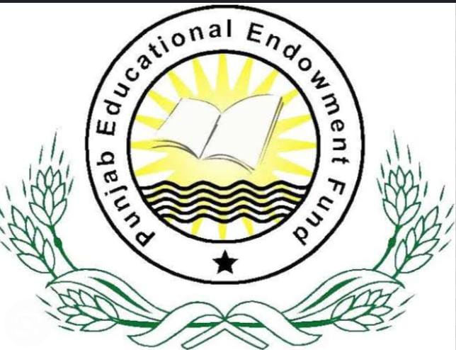
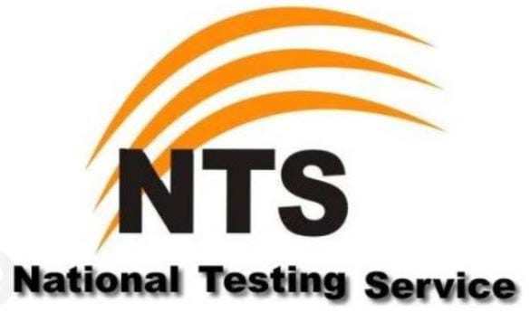

Government scholarships in Pakistan are financial aid programs offered by various government institutions and organizations to support students in pursuing higher education. These scholarships are designed to promote educational opportunities, enhance skills, and empower individuals to contribute to the socio-economic development of the country. They cater to a wide range of academic levels, from primary education to postgraduate studies, and cover various fields of study including sciences, humanities, engineering, and vocational training.
These scholarships can be awarded based on various criteria, such as academic merit, financial need, specific demographic groups (e.g., minorities, women, and people with disabilities), and specializations in high-demand fields. Some scholarships may also have specific eligibility requirements, such as a certain grade point average, standardized test scores, or specific courses of study.

>HEC offers scholarships for Pakistani students to pursue higher education in renowned international universities. These scholarships cover a wide range of disciplines at the postgraduate and doctoral levels. The program aims to develop a pool of highly qualified professionals to contribute to Pakistan's socio-economic development.
This initiative supports students from financially constrained backgrounds to continue their higher education. The scholarships cover tuition fees, and in some cases, provide a stipend for living expenses. HEC collaborates with universities across Pakistan to identify eligible students, ensuring that financial limitations do not hinder their educational aspirations.
>This program focuses on nurturing local talent by providing opportunities for doctoral studies within Pakistan. It targets exceptional individuals, particularly faculty members, to pursue PhD degrees in diverse academic fields. The scholarships cover tuition fees, living stipends, and research support, aiming to enhance the research capacity of Pakistani universities.
The Punjab Educational Endowment Fund (PEEF) scholarship is a government initiative in Pakistan aimed at providing financial assistance to talented and deserving students for their higher education. PEEF scholarships are awarded based on both merit and need, targeting students from all districts of Punjab province. These scholarships cover tuition fees, stipends, and other educational expenses, enabling students to pursue their studies without financial constraints, and thereby fostering academic excellence and social mobility. PEEF scholarships are a significant step towards ensuring equal access to quality education for students across Punjab.
The National Testing Service (NTS) scholarships in Pakistan are merit-based financial awards offered to exceptional students based on their performance in NTS-administered tests. These scholarships are typically available for various academic levels, ranging from undergraduate to postgraduate studies, and cover a wide array of disciplines. NTS scholarships aim to recognize and support outstanding academic achievement, providing students with the means to pursue higher education and contribute to the country's development. The program encourages excellence in education and helps nurture a competitive and skilled workforce in Pakistan.
 Government of Pakistan
Government of Pakistan
 Government Services Portal
Government Services Portal